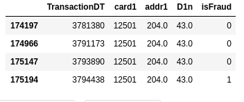

Fraud Detection Tabular Kaggle competition
My attempt to get to the top 10% LB
- Introduction
- Columns explanation
- TL;DR
- The Part that makes it hard to predict
- Way of work
- EDA
- Model
- Feature engineering
- Post Process
- Local Validation and Prediction Strategy
- Memory reduction
- Practical understanding of Overfitting and AV
Introduction
- Tabular time series data with 590k train transactions and 500k test transactions.
- 443 columns as independent variables
- “isFraud” is the dependent variable
- Leader Board (LB) is based on the public and private AUC score.
Goal: Predict transactions that are isFraud==1.
Submission: CSV file with TransactionID and Probability of
isFraud==1.
Grading: Based on AUC score.
Note: This is a year old competition that wont doesn’t allow “final submissions” anymore. Nevertheless I picked this competition to get experience in Tabular data, attempt my best solutions and learn from the greats.
Following is my systematic growth to a top 10% solution.
Columns explanation
-
TransactionDT: timedelta from a given reference datetime (not an actual timestamp) -
TransactionAMT: transaction payment amount in USD -
ProductCD: product code, the product for each transaction -
card1-card6: payment card information, such as card type, card category, issue bank, country, etc. -
addr: address -
dist: distance -
P_ and (R__) emaildomain: purchaser and recipient email domain -
C1-C14: counting, such as how many addresses are found to be associated with the payment card, etc. The actual meaning is masked. -
D1-D15:timedelta, such as days between previous transaction, etc. -
M1-M9: match, such as names on card and address, etc. -
Vxxx: Vesta engineered rich features, including ranking, counting, and other entity relations.
Categorical Features:
ProductCDcard1 - card6-
addr1,addr2 P_emaildomainR_emaildomainM1 - M9id_12 - id_38
TL;DR
My final Kaggle Kernel is here:
The following are roughly the things that improved my score.
| Method | Public LB | Private LB | Percentile |
|---|---|---|---|
| Baseline XGB | 0.9384 | 0.9096 | Top 90% |
Remove 200 V
|
0.9377 | 0.9107 | Top 80% |
| Remove time cols | 0.9374 | 0.9109 | Top 80% |
Transform D
|
0.9429 | 0.9117 | Top 50% |
| Combine cols and Frequency Encoding | 0.9471 | 0.9146 | Top 30% |
| Aggregation on uid1 | 0.9513 | 0.9203 | Top 27% |
| Additional aggregations | 0.9535 | 0.9220 | Top 5% |
| Fillna | 0.9537 | 0.9223 | Top 5% |
| Changed UID | 0.9543 | 0.9264 | Top 2% |
Main kernel of work done is here.
AUC score increase over time:
The Part that makes it hard to predict
-
We are not predicting Fraudulent Transactions. Once a client has a fraudulent transaction all the posterior transactions (associated with the useraccount, email address or billing address) are marked as fraud.
And it is not known as to What constitutes the client. Below is an example of an “assumed client-variable set”. Such a client could potentially have both
isFraud=0andisFraud=1in their transactions, making it harder to detect clients with fraudulent transactions.

- To make this even more difficult the meaning of most of the
columns are obscured. For example, we know that
D1toD15are some “timedeltas” such as days between each transaction, but don’t know what exactly they stand for. This goes for all 439 columns.
Way of work
-
Start with building a quick model after having a quick look at the data.
-
Do detailed EDA and test different ideas on the quick model.
-
submit model to get test score and iterate.
EDA
Lots of NaNs
-
The data has 254 variables (out of 439) with >25% NaNs.
-
I tried
fillna, removing the columns completely and also just leaving them as NANs. -
I found best results with filling NaNs with an artificial number such as
-9999. Removing>25%NaN columns seems to remove critical information. Results withfillnawere better by 0.0002 than leaving NaNs as it is.
Median Imputing doesn’t make sense
There are columns such as “card1” and “addr1” which denote credit card and address information respectively, but there is no way a median imputation makes any sense. So this is not done.
Reducing 339 V columns to 139 V columns
There were about 340 V columns said to be “engineered” by the
company conducting the competition. They are engineered from the other
100 columns.
The V columns share a “lot” of correlation and a large number of
Nan’s. The goal of this step is to find “similar” columns based on
number of “NaN’s”, and Correlation>0.75. This process is automated
for all the different NaN groups, using a script. The method is
explained as below:
- First group by NaN’s
- Within each Nan group, highly correlated columns are binned together
- The column with maximum unique values is chosen from each bin.
For example, V35 to V52 (17 columns) contain the exact same number
of NaNs (168k). They contain 8 pairs of highly correlated columns as
shown below. From this we select ['V36', 'V44', 'V39', 'V49', 'V47',
'V41', 'V40', 'V38'] (8 columns).
plt.figure(figsize=(15,15))
#mask = np.triu(xs_corr)
sns.heatmap(xs_corr, cmap='RdBu_r', annot=False, center=0.0)#, mask=mask)
plt.title('All Cols',fontsize=14)
plt.show()
Effect on LB and time: Small decrease in score for a large gain in computation time.
| public | private | time | |
|---|---|---|---|
| baseline | 0.9384 | 0.9096 | 11mins |
| remove 200 V columns | 0.9377 | 0.9107 | 7mins |
Reducing further
Tried reducing other columns, such as the C, M and ID columns in
a same manner but then they reduced the LB by 0.01, so this is as far
as the reduction goes.
Understanding D columns
D1 column is known from the discussions to be “days since the client
credit card began”. Subtracting this value from the “Transaction Day”
will result in CONSTANT values per client. D1n is the created column
after subtraction.
We do the same for all D columns irrespective, and allow the model
to decide what is important and what is not. Following is an example
of an “assumed client-variable set”. Notice how the D1n columns are
constant and the D1 columns increase over time, when the data is
sorted on TransactionDT.
Another column D9 denotes the hours at which the transactions are
done. This is tested using df["Hr"] =
df["TransactionDT"]/(60*60)%24//1/24. The following plot clearly
shows it’s relation to determining if a transaction is Fraud or not.
Unbalanced data
The Data has only 3.7% transactions denoted as “Fraud”
(isFraud=1). RandomOverSampling and Smote didn’t do much for the
score so I didn’t keep it.
EDA for UID
As said before this competition is not just about predicting
fraudulent transactions over time, it’s about predicting clients who
are more likely to have isFraud transactions. Client account, client
email addresses and client address associated with a Fraudulent
transactions is made isFraud==1 in a posterior fashion. We need to
thus find these client variables (UIDs) to be able to predict better.
Finding the UIDs
I stood on the shoulders of giants, to find help on this part.
UIDs are nothing but variables that help identify a particular clients’ transactions. Not all transactions are fraud for a client but “most” are expected to be. This allows us to determine the quality of a UID.
To find the UID, a bit of guess and adversarial validation (AV) is
used (AV is explained later). Based on how “isFraud” is defined we can
already guess that card1, addr1 & P_emaildomain are probably
part of UID. In addition we use AV to determine the rest of the
columns.
To evaluate how good the UID is, we look at how much percent of the
clients have both isFraud==0 and isFraud==1 and we check manually
if they happen one after the other in sequential manner. Shown below
are the evaluations for different UIDs.
| Mixed | isFraud==1 | isFraud==0 | |
|---|---|---|---|
| uid0 | 1.9% | 1.9% | 96% |
| uid1 | 1.4% | 2.3% | 96.3% |
| uid2 | 0.79% | 2.6% | 96.5% |
| uid3 | 0.43% | 2.6% | 96.9% |
| uid4 | 0.38 | 2.6% | 97% |
UID0: D10n, card1, addr1
UID1: D1n, card1, addr1
UID2: D1n,card1,addr1,p_emaildomain
UID3: D1n,card1,addr1,p_emaildomain, D3n
UID4: D1n,card1,addr1,p_emaildomain, D3n, V1, M7
In all cases “many” of the “Mixed” clients don’t have isFraud==0 and
isFraud==1 sequentially (as shown below). So it looks like most of
the Mixed clients are wrongly classified. I tried refining it with
several other combinations but had little success. So I moved on to
the testing out how these UIDs actually helped.
Final score with different UIDs (UID2 is the best)
| public LB | Private LB | |||
|---|---|---|---|---|
| uid1 | 0.9534 | - | 0.9220 | - |
| uid2 | 0.954 | +0.0006 | 0.925 | +0.003 |
| uid3 | 0.9464 | -0.007 | 0.913 | -0.012 |
Model
I started off with Random Forests, but didn’t get far with it. XGB, Catboost and LGBM seem to be preferred decision trees models in the ML community. So I chose XGB and stuck with it till the end to see what are the best results I can get with it. I used the default values and that was just good enough.
My classifier was made of:
clf = xgb.XGBClassifier(n_estimators=2000,
max_depth=8,
learning_rate= 0.05,
subsample= 0.6,
colsample_bytree= 0.4,
random_state = r.randint(0,9999),
use_label_encoder=False,
tree_method='gpu_hist')
As I wanted to get the max score possible, I used random_state =
r.randint(0,9999), as this would not keep the random_state
constant. Simulations in this manner produced variation in the order
of +-0.002 AUC score in some cases. So when it is unclear if a
hypothesis works or not, I run the same simulation a few times and
take its average.
Ensembling is also an option but I haven’t tried it in this competition. Based on the top solutions they seem to improve the score too.
Feature engineering
-
Fillna
df.fillna(-9999,inplace=True)XGB is capable of handling NaNs. It places the NaN rows in one of the splits at each node, (based on which gives a better impurity score). However if we choose a number to represent NaNs then it treats the NaNs like just another value/category. And it is a bit faster, due to lesser computations.
However
fillnaboosts the score only by0.0002. -
Label Encoding of Categorical data
All columns with <32000 unique values are made integers and label encoded. This is done to reduce the ram usage. A string in python uses almost twice as much memory as an integer. Label encoding is done using:
df.factorize() -
One hot encoding the NaN structure for certain columns
D2has 50% NaNs and is highly correlated (0.98) withD1. In this caseD2is removed and the NaN structure is alone kept.D9columns represents the time of transaction in a day. But it contains 86% NaN values. So a newD9column (HrOfDay) was created fromTransactionDTusingdf["Hr"] = df["TransactionDT"]/(60*60)%24//1/24. And the NaN structure ofD9is One Hot Encoded. -
Splitting
There are many categorical columns, that would allow for better models when split. For example, we have “TransactionAmt”, which allows for the split: “dollars” and “cents”.
centscould be a proxy for identifying if the transaction is from another country than US. Possibly there could be a pattern on how frauds happen with “cents”. The “split” is done using the following function:def split_cols(df, col): df['cents'] = df[col].mod(1) df[col] = df[col].floordiv(1)
Another example is
id_31. It has values such aschrome 65.0,chrome 66.0 for android. To aid the model we split the version number and browser using the commands below. The same has been done for several other columns, and kept if it resulted in an increase in score or featured high in the feature importance plots.lst_to_rep = [r"^.*chrome.*$",r"^.*aol.*$",r"^.*[Ff]irefox.*$"...] lst_val = ["chrome","aol","firefox","google","ie","safari","opera","samsung","edge","chrome"] df["id_31_browser"].replace(to_replace=lst_to_rep, value=lst_val, regex=True,inplace=True); -
Combining
Combining values such as
card1andaddr1, by themselves they might not mean much, but together they could correlate to something meaningful. One such combination is the UID. But we don’t keep the UID just as we don’t keep the time columns. -
Frequency encoding
The frequency of the values of a column seems important to detect if a transaction is fraud or not.
def encode_CB2(df1,uid): newcol = "_".join(uid) ## make combined column df1[newcol] = df1[uid].astype(str).apply(lambda x: '_'.join(x), axis=1)Added several features based on this and resulted in increase in score (documented below).
-
Aggregation (transforms) while imputing NaNs
This is one of the most important parts of the solution which boosted the score all the way into top 10% from top 30%. Why Aggregations work is explained here. The aggregation is done after combining the train and test dataframes. The following
groupbycommand does it all.df_all.groupby(uid,dropna=False)["TransactionAmt"].transform("mean").reset_index(drop=True)It is very important to add
dropna=False, as there are many NaN rows which would be dropped otherwise.fillnais not done until the aggregations are made. This way, Nan’s in the aggregated column get imputed.Finding the columns to be aggregated was possible using just the AV feature importance seen above and a bit of logic.
-
Removing redundant columns based on Feature Importance
As far as I have seen, removing redundant columns makes the model faster and rarely improves the score. Having said that I tried to remove columns that seemed redundant but got the score reduced by 0.002, which is a LOT in this competition. So I kept all those variables. However removing redundant
Vcolumns (200 of them) gives a large decrease in time of computation. So those are the ones that are removed. -
Removing time columns such as
TransactionDTandTransactionID
What worked and by how much
| Method | Public LB | Private LB | Percentile | ||
|---|---|---|---|---|---|
| baseline | 0.9384 | 0.9096 | Top 80% | ||
remove 200 V
|
0.9377 | -0.003 | 0.9107 | +0.001 | Top 80% |
| remove time cols | 0.9374 | -0.0003 | 0.9109 | +0.0002 | Top 80% |
Transform D
|
0.9429 | +0.0055 | 0.9117 | +0.0008 | top 50% |
| Combine and FE | 0.9471 | +0.0042 | 0.9146 | +0.0029 | top 30% |
| Agg on uid1 | 0.9513 | +0.0042 | 0.9203 | +0.0057 | top 20% |
| additional agg | 0.9535 | +0.0022 | 0.9220 | +0.0017 | top 10% |
| fillna | 0.9537 | +0.0002 | 0.9223 | +0.0003 | top 10% |
Post Process
isFraud of the same clients are all expected to be 0 or 1. So,
tried averaging the “identified-client’s” probabilities across train
and test. This resulted in a poorer score by upto 0.003. So didn’t
end up using it.
Local Validation and Prediction Strategy
Initially I started with a 10% sample dataset and looked at a hold out. Considering that it took 7 mins per simulation for the entire dataset, I went on to use the entire dataset instead of just the sample.
I tried a couple of strategies here and compared to test solution:
- Holdout and predict average of 5 models
- 5Fold CV unshuffled.
- Group 5fold CV based on Month
The following are the results:
| Local | Public LB | Private LB | |
|---|---|---|---|
| 5Fold CV unshuffled | baseline | baseline | baseline |
| Holdout (5x) | -0.01 | -0.013 | -0.016 |
| Month 5fold CV | +0.0022 | -0.0006 | +0.0000 |
The Holdout method seems obviously not good. Month 5fold CV did not
produce significant increases (>0.002) in LB so I skip it. All are
compared to the baseline values (5fold CV unshuffled).
Note: As this is a time series simulation people had warned about not using CV: here, and here. However the best results, including that of the top solution for this competition were only possible due to CV.
Memory reduction
-
Label encoding of categorical variables.
-
Converting variables to float32 should be good enough.
16bit: 0.1235 32bit: 0.12345679 64bit: 0.12345678912121212
With the AUC numbers, 8 digits beyond the decimal seems good enough.
-
Removing 200 V columns out of the 439 columns with little change in score allowed to finally do AV on the kaggle kernel without going out of memory.
Practical understanding of Overfitting and AV
Preventing overfitting
There are usually two reasons why the Training score and Test score differ:
-
Overfitting
-
Out of Domain Data
i.e., test and train data are from different times, or different clients etc…
There is a nice trick to see what is causing the difference in scores between the training and the test data: Determining OOF (out-of-fold) scores. The OOF score is basically a score on unseen data but within the training data domain itself. It nicely controls for the effect of “out of domain” data. So,
-
OOF (out-of-fold) scores < Train scores ==> Overfitting
-
Test scores < OOF scores ==> Out-of-domain data
Example of only over-fitting
From the beginning I have suffered mainly with overfitting rather than
the out-of-domain data issue. My OOF<<Train (indicating overfitting)
and Test>OOF (not indicating “out-of-domain” issue):
| train | OOF | test (public) | |
|---|---|---|---|
| baseline AUC | 0.99 | 0.9292 | 0.9384 |
Example of both over-fitting and out of domain issue
In another case, where I accidentally changed some values of columns
in the test dataset as NaNs, I saw the following. Here OOF<<Train
(indicating overfitting) and also Test<<OOF (indicating
“out-of-domain” issue):
| train | OOF | test (public) | |
|---|---|---|---|
| AUC | 0.9971 | 0.9426 | 0.9043 |
Looking at the important AV columns, and probing into those columns allowed me to fix the issue.
Preventing overfitting
What appears to reduce overfitting are:
-
removal of time and client columns such as
TransactionIDandTransactionDT, Created UIDs etc… -
Other Feature Engineering based columns (Frequency Encoding, combining columns, and most important of all Aggregations).
-
Choosing the right parameters for the XGB model (i.e., depth of tree etc…).
What can your AV do for you?
Adverserial Validation is a simple technique that helps distinguish the difference in the train and the test data. In this kernel, I show how to do AV with a simple example. It involves the following steps:
- Concat the train and the test data set.
- Append a new column “is_test”.
- Split data into training and validation.
- Train model and get AUC score on
istest==1for the validating set.
AV can identify out-of-domain data
In the image above, the circles (blue) denote training data. The blue
line denotes the line fit. Red line denotes an overfit line. Different
colored stars (blue, green, red, yellow) denote different types of
test data. Y is the dependent variable and X is the independent
variable. The dotted blue line indicates the predicted value in case
the data lies beyond the training bounds.
The three regions marked in “big bubbles” are where there is no
training data and hence these are out-of-domain data regions. We
simply get a very high AUC score (AUC=1) from AV for these (red,
green and yellow stars). In this kernel it is checked with an
example that the “big bubbles” in the image above have AV AUC=1.
AV AUC=1 and how they affect test predictions
When the test set is denoted by the green stars, it is clear that the
resulting test score is going to be “bad”. However, when the test set
is denoted by the yellow stars, error in predicting seems to be less
in comparison (despite having AV AUC=1). When the test set is
denoted by the red stars the error doesn’t seem to be that bad either
AV AUC=1.
From the beginning to the end for this competition, I had >0.9 AUC,
and nevertheless ended up with very good results (0.953–>top 10%). In
addition the OOF score (from training) was less than the TEST score
informing that the OUT-OF-DOMAIN data was not the problem for the
score. I am thus inclined to think that in my case I probably end up
with test data which are out of domain like the red and yellow stars
and not like the green stars.
How AV is used in this kaggle competition
-
Identify and Remove time columns like
TransactionIDandTransactionDTWhen AV is first run on this dataset, two columns standout:
TransactionDTandTransactionID. One is the time info in seconds and the other is the id of each transaction. Ideally we don’t want to be using such time columns as we don’t want the model to learn anything specific to the Date or the ID of transactions. AV provides a platform to identify such variables and eventually we can get rid of them. -
Removing very different columns for negligible score loss.
In one of the iterations I had 203 columns with an lb score of
0.953. Removing 20 of the most important AV columns resulted in a small decrease in score0.9511. I always try to see how the “out of domain” data affects our result. -
AV helps find aggregations that we need
This is and will be the greatest reason for doing AV. AV is so powerful that improving my score from top 80% to a top 10% score was done purely by looking at the important AV columns.
I pretty much used the first 10-20 important AV columns (and a few columns on my own) to determine which columns to choose as UID and which to aggregate over.
-
Find mistakes with your AV
I applied aggregation to the training dataset and accidentally did not apply it to the test. This was promptly visible in the AV as the aggregated columns showed up first in the “AV important columns”. A quick look at the top AV important columns and I found my error.
For example, in one of the experiments I got the following:
train OOF test (public) AUC 0.9971 0.9426 0.9043 From this it is possible to infer that there is both overfitting (train»OOF) and Out of Domain issue (OOF»test). Using AV, I was able to find out which columns were giving me the problem. When I probed in deeper into the columns, it turned out that I had accidentally added NaN’s to the test data.
Once I corrected for it, I ended up with:
train OOF test (public) AUC 0.998 0.9474 0.9530
References
- Data description
- Plots and much more for many features
- Top Solution , top solution model
- How the Magic UID solution Works
- Other ideas to find UIDs
- Notes on Feature Engineering
- Lessons learnt from Top solution
- Other nice EDAs, and here
- 17th place solution
- How to investigate D features
- Don’t use Time features
- Fastai tabular NN